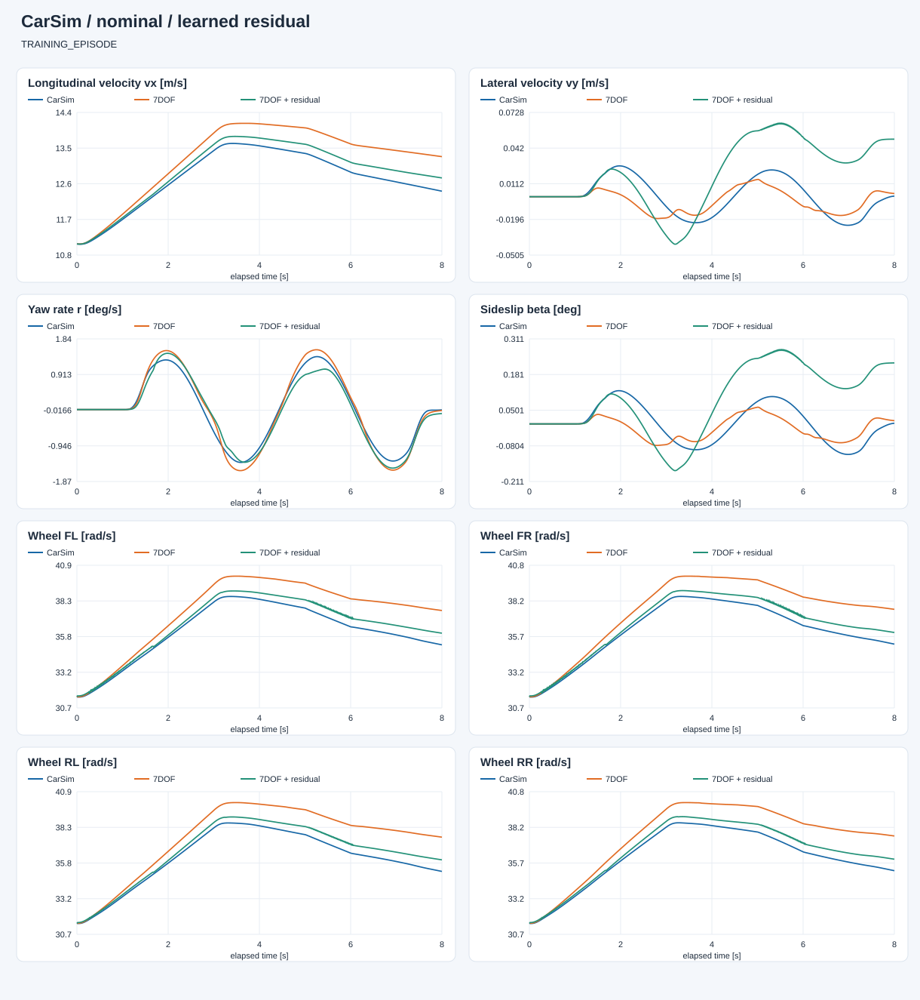
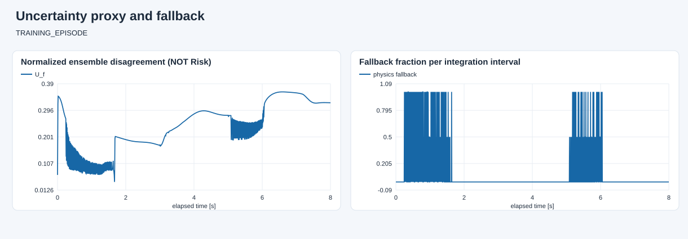

E:\modelcodeE\DRL_MPC\DRL_MPC\carsim_rl\artifacts\dynamics7dof\open_loop_20260927_223412_368297\capture
数据角色：TRAINING_EPISODE。 蓝色为 CarSim，橙色为原模型，绿色为学习补偿。两种模型都只初始化一次，不重置到真值。 共同有效覆盖率：100.0%。训练回合改善不等于泛化；已用于设计修改的开发对照回合也不是独立验证。 未接管控制、未生成 Risk 标签；高分歧/超范围回退只是工程防护，不是安全证明。

| 状态 | 原模型 RMSE | 补偿 RMSE | 原模型 MAE | 补偿 MAE |
|---|---|---|---|---|
| vx_m_s | 0.5608324546077482 | 0.20004397637471005 | 0.5024166407378667 | 0.17727347391372902 |
| vy_m_s | 0.012416123531821907 | 0.03415063873026872 | 0.009670650966007655 | 0.027481221533418972 |
| yaw_rate_rad_s | 0.002719375795090782 | 0.003113717075665949 | 0.00227661435625162 | 0.0026423575299662013 |
| omega_fl_rad_s | 1.5891668712094156 | 0.4956501446797355 | 1.4266998090984575 | 0.4418523175022467 |
| omega_fr_rad_s | 1.5890577984974972 | 0.479996795584547 | 1.4289866359094379 | 0.4321140802788149 |
| omega_rl_rad_s | 1.5882838219492048 | 0.49312452462752904 | 1.4278595727420238 | 0.44210913458141937 |
| omega_rr_rad_s | 1.587824112581914 | 0.4810158603804802 | 1.4289719045988971 | 0.43375828609369993 |
转向前、正弦输入期间、转向结束 0.5 s 后分别统计；末段不保证已经达到平衡。
| 阶段 | 状态 | 样本 | 原模型 | 补偿 |
|---|---|---|---|---|
| before_steering | vx_m_s | 900 | 0.07492135571142594 | 0.031073221378904448 |
| before_steering | vy_m_s | 900 | 6.110026450599827e-16 | 1.2382955309635905e-15 |
| before_steering | yaw_rate_rad_s | 900 | 2.176314687991178e-16 | 4.271012317099956e-16 |
| steering_active | vx_m_s | 6667 | 0.5793759120821615 | 0.20515840187138087 |
| steering_active | vy_m_s | 6667 | 0.013462439768958251 | 0.03540221237748901 |
| steering_active | yaw_rate_rad_s | 6667 | 0.0029545046044570683 | 0.003358500424883072 |
| after_steering_plus_0p5s | vx_m_s | 0 | None | None |
| after_steering_plus_0p5s | vy_m_s | 0 | None | None |
| after_steering_plus_0p5s | yaw_rate_rad_s | 0 | None | None |

连续积分平均回退比例：0.027974683544303797；与实测状态上的逐点诊断回退比例不是同一指标。
完整指标见 evaluation.json。低网络分歧不保证低真实误差，尚未完成不确定性校准。